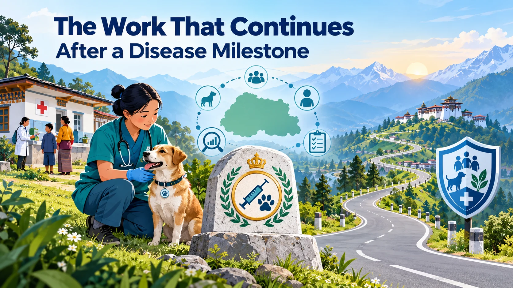

DAY 01 · 6 September 2026
When More Jobs Are Only Part of the Story
Look beyond a jobs headline to the quality of work, purchasing power and policy trade-offs.
10 paragraphs · 30 expressionsOpen lesson →
YOUR IELTS READING LIBRARY
Explore the ideas behind the headlines. Read an illustrated passage, question its claims, and turn useful English into language you can use.
THE COLLECTION
DAY 01 · 6 September 2026
Look beyond a jobs headline to the quality of work, purchasing power and policy trade-offs.

DAY 02 · 7 September 2026
Explore how prevention, surveillance and accessible services keep a disease milestone secure.
DAY 03 · 9 September 2026
Connect reading proficiency, useful support and repeated practice to independent choices and civic participation.